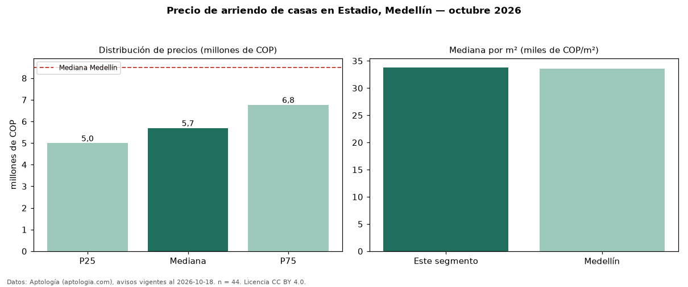

Precio de arriendo de casas en Estadio, Medellín — octubre 2026
COP 5,70 millones al mes es el canon mediano de casas en arriendo en Estadio, Medellín (n = 44 avisos). Eso es 33 % por debajo de la mediana de Medellín para casas (COP 8,50 millones). Por metro cuadrado, la mediana es COP 33.809/m² al mes (n = 44 avisos con área), 1 % por encima de Medellín (COP 33.613/m²). Con el precio por m² de venta del mismo segmento (COP 5,91 millones/m²), la rentabilidad bruta implícita es 6,9 % anual (aproximación con medianas de ofertas distintas). El área mediana anunciada es 170 m². El segmento con más oferta es el de 3 o más habitaciones (41 avisos, mediana COP 5,80 millones). Por precio mediano es el puesto 15 de 23 barrios de Medellín con al menos 30 avisos de casas en arriendo (COP): en la franja media. El estrato más frecuente es 5 (73 % de los avisos con estrato). Datos: Aptología (aptologia.com), CC BY 4.0 — https://www.aptologia.com/casas-en-arriendo/medellin/estadio. Archivos: PDF, CSV con las cifras y gráfica PNG.

| Avisos únicos | 44 |
|---|---|
| Percentil 25 | COP 5.000.000 |
| Mediana | COP 5.700.000 |
| Percentil 75 | COP 6.775.000 |
| Mediana por m² | COP 33.808 |
Fuente: avisos vigentes de portales inmobiliarios recopilados por Aptología, deduplicados (mínimo 30 avisos únicos por celda). Precios pedidos, no cerrados. Fecha: 2026-10-18.